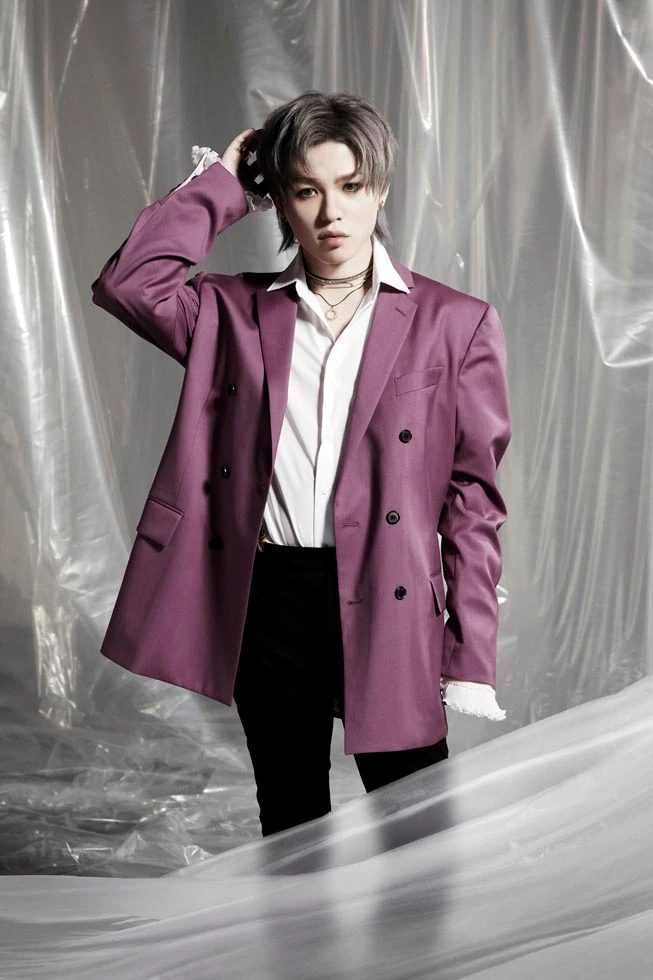

AAA | TAKAHIRO NISHIJIMA MISAKO UNO
MITSUHIRO HIDAKA | SHINJIRO ATAE | SHUTA SUEYOSHI
AAA(トリプル・エー)
男女混合パフォーマンスグループ。
2005年9月14日にシングル「BLOOD on FIRE」でデビュー。
2005年末、「第47回輝く！日本レコード大賞」最優秀新人賞受賞。
また、デビュー1周年にあたる2006年9月13日には初の日本武道館ライブを、前代未聞の無料招待で行い、約1万人の動員を記録。
デビュー10周年となる2015年は、1月～7月まで7ヶ月SG連続リリース。
全国アリーナツアー、自身初となるアジアツアー、9月にはグループ単独初となる野外ライブを開催。
2016年11月には自身初となるドーム公演を開催。
2017年～2019年にかけて3年連続で4大ドームツアーを開催した。


